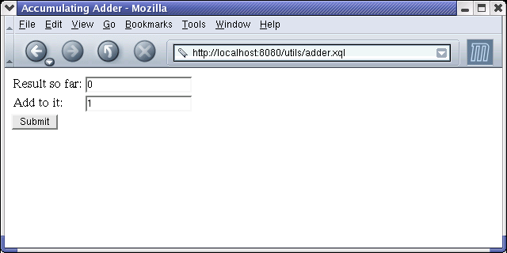

In this article we will show to to write and install a very simple "web application" written in the XQuery language. Our application uses the servlet extension of Qexo (version 1.7 or later), a Free implementation of XQuery.
Our application presents to the user a form like the following:
.
You can edit either field, perhaps to 10 and 3.
When you click Submit,
you get an updated form showing the sum of the two fields:
The application uses HTTP parameters to "remember" the sum from
one request to the next. A more interesting application
might use some kind of permanent storage or a datebase.
We'll get those in later article, but for now let's think of
this as a slightly more interesting version of "Hello world!".
The following simple XQuery program adder.xql
handles both the "logic" and "presentation" of our web application.
define function num-parameter($name, $default) {
number(request-parameter($name, $default))
}
<html>
<head><title>Accumulating Adder</title></head>
<body>
<form>
<table>
<tr>
<td>Result so far: </td>
<td>
<input
name="sum1"
value="{num-parameter("sum1", 0)+num-parameter("sum2", 0)}" />
</td>
</tr>
<tr>
<td>Add to it:</td>
<td><input name="sum2" value="{num-parameter("sum2", 1)}" /></td>
</tr>
</table>
<input type="submit" value="Submit" />
</form>
</body>
</html>
The main part of our XQuery module is just a big "element constructor
expression" that generates the HTML (or rather XHTML)
of a single <form> element.
The initial values of the <input> fields are
given by embedded XQuery expressions inside {curly braces}.
Those use the num-parameter function,
which is defined in the Query prolog.
The num-parameter function uses request-parameter
to extract a named HTTP parameter from the URL.
(Future Qexo version may provide alternative ways of getting request
parameters, including likely moving request-parameter
to a non-default name-space.)
I'll explain the control flow of our "application" after we look at how to install and get it running.
Installing this application is very easy, assuming you have
a web server that can run servlets.
I tested this application using version 4.1.24 of
Tomcat,
which is a Free web server
written in Java and released by the Apache Foundation's Jakarta project.
I assume you or someone else has already installed Tomcat,
and that the environment variable $CATALINA_HOME is
where Tomcat is installed.
Qexo is part of the
Kawa framework.
You will need to install a jar file of Kawa
(version 1.7 beta2 or later).
You can get kawa-1.7.jar from
the Kawa ftp site
or from a mirror site.
Install this as $CATALINA_HOME/shared/lib/kawa-1.7.jar.
(If you're using Tomcat 4.0.x, shared/lib doesn't
exist. Use $CATALINA_HOME/lib/kawa-1.7.jar instead.)
If Tomcat isn't already running, start it.
For example, under Unix-like systems you can
run the script $CATALINA_HOME/bin/bin/startup.sh.
You may need to set the environment variable JAVA_HOME
to point to where Java is installed on your machine.
(On Mac OS X 10.2 this
is /System/Library/Frameworks/JavaVM.framework/Home.)
If you haven't changed any of the defaults,
you should now be able to point your browser at
http://localhost:8080/,
and get the default Tomcat home page.
A web application is a group of data,
servlets, and configuration files to handle a related set of URLs.
The servlet specification specifies the directory structure of a
web application.
Let us instll our adder in a new web application called utils.
This means that we need to create two directories:
mkdir $CATALINA_HOME/webapps/utils mkdir $CATALINA_HOME/webapps/utils/WEB-INF
Each web application has a web.xml configurarion file.
Copy the following file into
$CATALINA_HOME/webapps/utils/WEB-INF/web.xml:
<?xml version="1.0" encoding="ISO-8859-1"?>
<web-app>
<display-name>XQuery Utils</display-name>
<servlet>
<servlet-name>KawaPageServlet</servlet-name>
<servlet-class>gnu.kawa.servlet.KawaPageServlet</servlet-class>
</servlet>
<servlet-mapping>
<servlet-name>KawaPageServlet</servlet-name>
<url-pattern>*.xql</url-pattern>
</servlet-mapping>
</web-app>
The <servlet-mapping> clause tells Tomcat (or any
other compatible web server) that if it sees a URL that matches
the pattern *.xql within the current
web application utils, then it should use the servlet named
KawaPageServlet to handle it.
The <servlet-name> clause tells Tomcat that
the servlet named KawaPageServlet is implemented
by the Java class gnu.kawa.servlet.KawaPageServlet.
(This class is included in the kawa-1.7.jar that
we installed earlier.)
In other words, any URL of the
form http://localhost:8080/utils/*.xql
or http://localhost:8080/utils/*/*.xql and so on
will be handled by the class gnu.kawa.servlet.KawaPageServlet.
So far this has all been boiler-plate. Now finally we just need
to install our XQuery program adder.xql into
the utils web application, by copying to the file:
$CATALINA_HOME/webapps/utils/adder.xql.
To access the web application, point you favorite browser at
http://localhost:8080/utils/adder.xql.
Tomcat will receive this request, use the utils part
to determine that it is for the utils web application,
and use the utils/WEB-INF/web.xml configuration file.
That tells Tomcat to forward the request to the KawaPageServlet.
The first time the
After
In your browser you can edit the input fields,
changing them to (say) 10 and 3.
When you click KawaPageServlet sees a request
for adder.xql it will compile adder.xql
to a Java class named adder. This class will get added
to the Java Virtual machine that is running Tomcat, but by
default the class is not written to a file.
This means that adder.xql will have to be re-compiled
the first time you request it each time you re-start Tomcat,
but the Kawa compiler is fast enough that there is no real gain in
keeping the compiled class around. (Kawa also gives you the
option of manually compiling to a servlet).
(If you're cursious about the class that KawaPageServlet creates,
add a qexo-save-class parameter to the initial request,
as in http://localhost:8080/utils/adder.xql?qexo-save-class.
This will write out the compiled class to
$CATALINA_HOME/webapps/utils/WEB-INF/classes/adder.class.)
http://localhost:8080/utils/adder.xql?sum1=10&sum2=3.
The Tomcat browser receives the request, passes it
to KawaPageServlet has compiled adder.xql,
it will execute the compiled body of adder.xql.
This first time, there won't be any parameters in the request,
so calls to the request-parameter function return the
specified default values: respectively 0, 0, and 1. So the
initial values in the <input> fields
will be 0 and 1 respectively.
The result of evaluating adder.xql will be some XHTML,
which will be sent as the HTTP response back to your browser,
which will display as in teh first image above.
Submit those values are used
to set the HTTP request parameters sum1 and sum2,
with the browser sending the URL
KawaPageServlet, which forwards the request to the
previously-compiled adder class.
This time the adder gets the values 10 and 3, respectively,
for the parameters sum1 and sum2,
so when the new form is returned to the browser the initial
values of the two fields are 13 and 3,
whihc will display the second image above.
If you leave the fields as-is and click Submit,
the updated forms will show 16 and 3. And so on.
If you request adder.xql after ading it,
KawaPageServlet will automatically re-compile it.
This makes it easy to test out changes.
If you make a syntax error, the result sent to the browser
will include error messages from the compiler.
If you cuase a run-time error, you will get a stack trace
that will hopefully help you track down the error.
The latest XQuery draft specification includes a trace
function that may be useful.